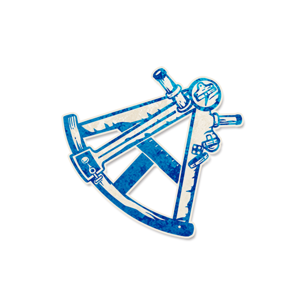

颅相学家

角色配置
- 角色类型：镇民
每个夜晚，你要选择一个角色类型（与前两晚不同）和一名除你以外的玩家：你会被善良玩家当作相应类型的角色和阵营，然后你会得知你们角色类型是否相同。
以上配置来自最终 JSON 合集；以下保留原文档说明（如有）。
背景故事
“颅骨不会撒谎，撒谎的是解读颅相的人。”
角色作者
张顺风
角色能力
每个夜晚，你要选择一个角色类型（与前两晚不同）和一名除你及旅行者外的玩家：你会被善良玩家当作相应类型的角色和阵营，然后你会得知你们角色类型是否相同。
角色简介
颅相学家能够得知一名玩家是否是某个角色类型，但代价是会对善良阵营产生干扰。
●每个夜晚，颅相学家要选择一个角色类型和其他玩家，并得知那名玩家是否是这个角色类型。
●颅相学家会对包括自己在内的善良玩家产生互动干扰，干扰内容则是选择的角色类型。
●颅相学家不能选择自己和旅行者作为目标。
范例
颅相学家选择了镇民和一名玩家，那名玩家是呆瓜。颅相学家得知了否。
筑梦师选择了颅相学家，颅相学家当晚选择了外来者。筑梦师得知了呆瓜和洗脑师。
投毒者和筑梦师都选择了颅相学家，颅相学家选择了爪牙。筑梦师得知了颅相学家和方古。
颅相学家选择了外来者和一名玩家，那名玩家是呆瓜，恶魔是涡流。颅相学家得知了是，因受涡流能力影响得知客观错误信息“是”。
运作方式
每个夜晚，唤醒颅相学家。让他指向剧本列表的一个角色类型，再让他指向一名除自己和旅行者外的任意一名玩家给他出拇指向上或向下的手势。让他重新入睡。
提示标记
●镇民●外来者●爪牙●恶魔
放置条件：在颅相学家清醒且健康时选择相应的角色类型后放置，进行第三次选择时，移除第一次选择的TOKEN。
移除时机：在颅相学家第三次或更多选择了其他角色类型后、或颅相学家死亡时移除。
规则细节
●颅相学家产生信息的本质是输出有价值的、可能客观错误的信息，因为颅相学家得知的是“你们角色类型是否相同”，而颅相学家会同时干扰自己。
●如果持有颅相学家的玩家是邪恶的，那么他将不会受到颅相学家干扰。那么他的查验就会局限于查验是否与自己相同，但对善良玩家的干扰依然有效。
●相克规则：由于镇民角色被当作邪恶类型角色会和功能型角色产生一些神奇的交互，剧本作者务必充分考虑那些交互的合理性，并在必要的情况下设置合理的相克规则。
角色信息
●英文名：Phrenology
●角色类型：镇民
●角色能力类型：获取信息、互动干扰